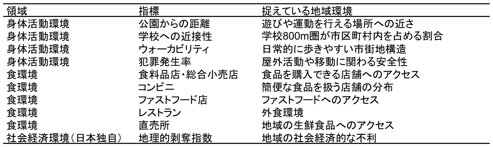
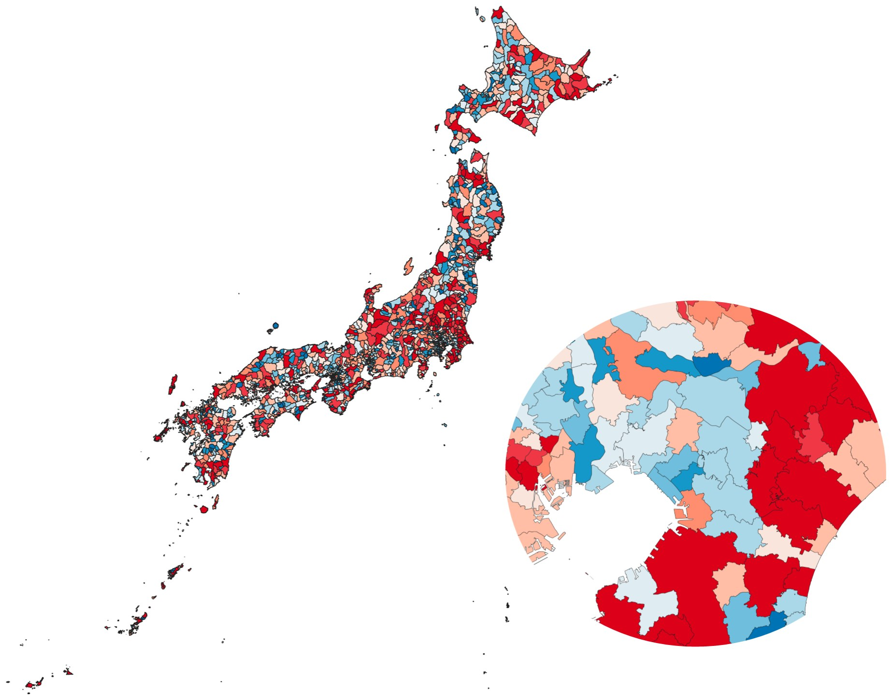

小児肥満誘発環境指数から考える
子どもの健康を支える地域
徒歩や自転車による登下校（Active School Travel：AST）は、子どもが毎日の生活の中で身体を動かす機会です。本稿では、小児肥満誘発環境指数を手がかりに、ASTを子どもの健康につなげる地域環境について考えます。
ASTを地域環境から考える
ASTは、徒歩や自転車によって学校へ移動する通学形態です。子どもにとって通学は毎日繰り返される行動であり、ASTは特別な運動プログラムに参加しなくても、身体活動を継続的に確保できる機会になります。しかし、長い通学距離、交通量の多い道路、歩道の不足、犯罪や暑さへの不安がある地域では、徒歩や自転車による通学は難しくなります。ASTは家庭の選択だけではなく、学校の配置や道路、安全性を含む地域環境によって支えられています。
小児肥満は、ASTがもつ健康上の意義を考えるうえで重要な課題の一つです。世界では1990年以降、青少年の肥満が大きく増加し、日本でも肥満傾向児の割合は長期的に上昇するとともに、都道府県間で大きな差がみられます。小児期の肥満は成人期にも持続しやすく、糖尿病や心血管疾患などの非感染性疾患のリスクと関連するため、学校や地域を基盤とした早期予防が求められています。
小児肥満は食事や身体活動だけでなく、睡眠、家庭環境、遺伝など多くの要因によって生じます。一方、公園や運動施設への近さ、地域の歩きやすさ、学校までの距離、健康的な食品へのアクセス、安全性などの地域環境も、子どもの日常行動を通じて影響する可能性があります。ASTは、こうした地域環境が日常的な身体活動へつながる具体的な経路の一つとして捉えることができます。
日本の市区町村を対象とした小児肥満誘発環境指数（COEI）
本稿では、アメリカで実施された先行研究を参考に、日本全国の1,895市区町村を対象に、小児肥満誘発環境指数（Childhood Obesogenic Environment Index：COEI）を算出しました。COEIは、身体活動環境、安全性、社会経済状況、食環境に関する10指標から構成されます（表1）。各指標について、肥満を誘発しにくい地域から誘発しやすい地域まで順位づけし、0～100の値に変換しました。市区町村ごとのCOEIとし、値が高いほど、相対的に肥満を誘発しやすいと考えられる地域環境を示します。COEIはASTそのものを評価する指標ではありません。地域の背景を、歩きやすさや学校への近接性だけでなく、食環境や社会経済状況も含めて捉えられる点に特徴があります。

小児肥満誘発環境の地域差
市区町村別のCOEIを地図化しました（図2）。全体として、都市部ではCOEIが低い傾向にありました。都市部では、学校や公園への近接性、ウォーカビリティなど、身体活動環境に関する指標が比較的良好であったことが、COEIの低さに反映されたと考えられます。一方で、首都圏の拡大図からは、同じ大都市圏の内部にも市区町村間の差があることが確認できます。これには、学校や公園への近接性、ウォーカビリティ、食環境など、複数の指標の違いが反映されています。

また、人口密度の低い地域が一様に肥満を誘発しやすいわけでもありません。農村部では、学校や公園までの距離が長く、歩行環境に課題を抱える地域がある一方、ファストフード店が少なく、食料品店や直売所が相対的に多い地域もあります。COEIの総合点だけでなく、その内訳の確認が重要であると考えられました。
実践への示唆：ASTを子どもの健康を支える地域を考える機会に
COEIは、子どもが生活する地域を考える参考指標になります。具体的な対策の検討には、学校区、通学距離、通学経路、交通量、歩道、日陰などの詳細な情報を重ねる必要があります。
地域住民、行政、教育、保健の関係者が、ASTを子どもの健康を支える地域を考える機会として共有することが重要です。